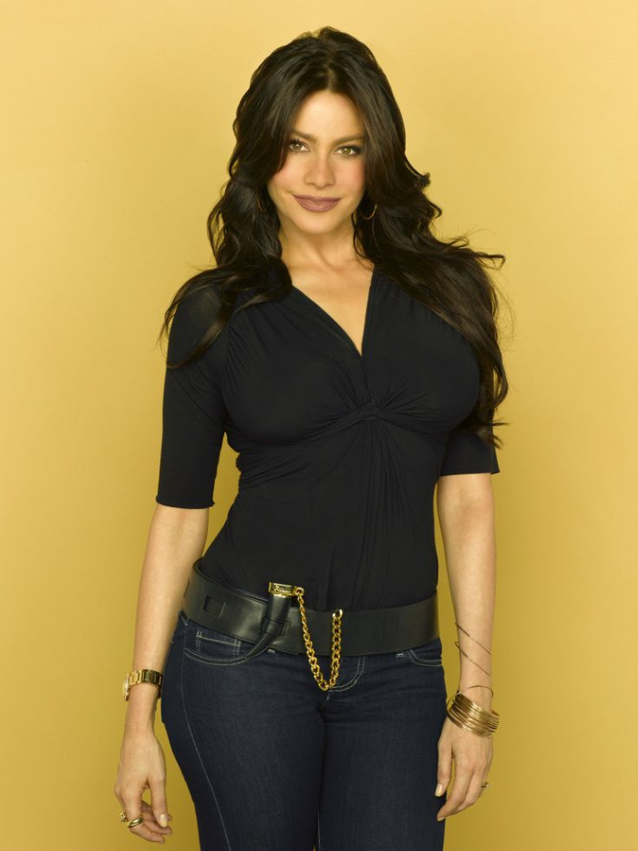

Jay
Jay Pritchett is a pragmatic, no-nonsense businessman with a dry sense of humor and a sometimes gruff exterior. Though initially set in his ways, he grows more open-minded and sentimental over time, especially through his relationship with Gloria and their young son, Joe. Despite his tough front, Jay deeply cares for his family and often shows a softer, protective side when it matters most.

Sofia
Gloria Delgado-Pritchett is a fiery, loving Colombian woman with a strong accent and a passionate personality. She's fiercely protective of her family, often expressing her love through bold gestures and heartfelt advice. Proud of her heritage, Gloria is unapologetically herself, blending charm, humor, and a bit of unpredictability in everything she does
Manny
Manny Delgado is a mature, romantic, and artistic young man with a deep love for poetry, culture, and the finer things in life. Unlike typical kids his age, he’s sensitive, thoughtful, and often wise beyond his years, which can make him seem eccentric but endearing. He’s incredibly close to his mother, Gloria, and looks up to Jay as a father figure, embracing their unique family dynamic with an open heart.